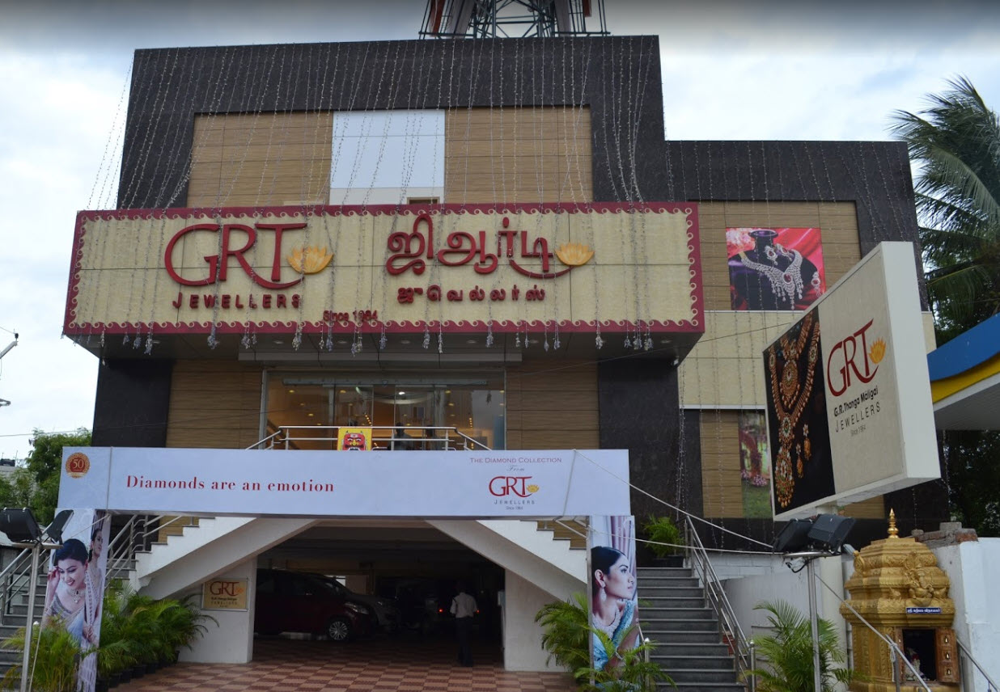

It was in 1964 that G. Rajendran founded GRT Jewellers, in the fast-growing shopping hub of Chennai (formerly Madras). Like all great success stories, GRT as the shop is fondly called by customers, began from humble origins. Through single-minded focus on customer satisfaction, GRT soon became a household name in Chennai, gaining renown for the purity of its ornaments, wide choice of designs and consistent customer delight.
'GRT Silversmith' is an exclusive silver jewellery collection introduced by GRT Jewellers. The overwhelming response to this collection called for a separate showroom of its own, housed at Chennai next to GRT Jewellery Saving Scheme Section and shop-in-shops across all its branches.
'GRT Oriana' Statements in gold begin at Rs. 3000 another successful GRT Collection targeted at young women between 18 and 35 years, and offers gold and diamond collections that can be worn daily to work, campus or to a party.
9:00AM TO 9:00PM
11:00AM TO 11:30PM

Our Vision is our framework that guides our business and everything about it
To understand and delight the world, translating everyone’s dream and personality into jewellery, and spread the happiness from it to all.
Our mission declares our purpose of existence as a company and our objectives.
To give every customer much more than what he asks for in terms of quality, selection, value for money and customer service, by understanding local tastes and preferences and innovating constantly to eventually provide an unmatched experience in jewellery shopping.